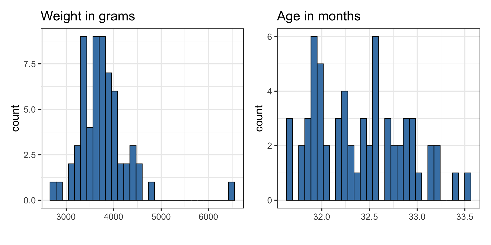
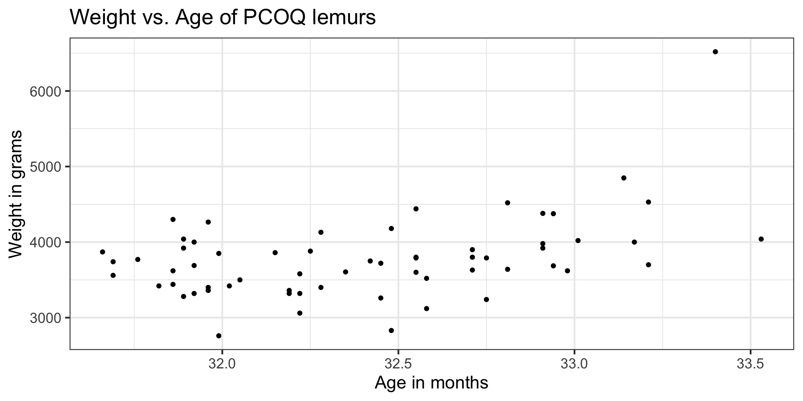
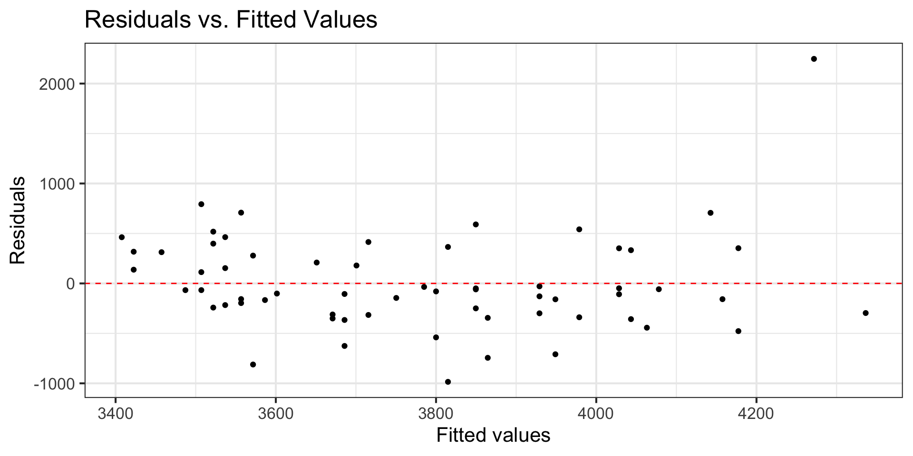
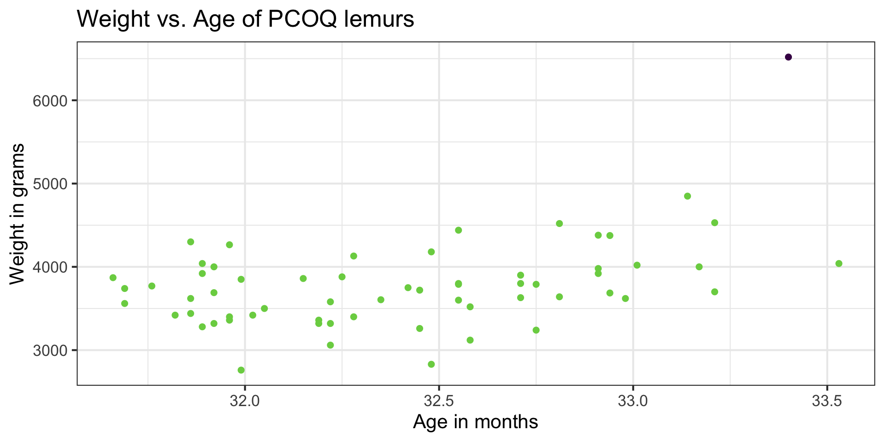

# load packages
library(tidyverse)
library(tidymodels)
library(knitr)
library(patchwork)
library(viridis)
# set default theme in ggplot2
ggplot2::theme_set(ggplot2::theme_bw(base_size = 16))Model conditions + diagnostics
Announcements
Exam corrections (optional) due Tuesday, March 4 at 11:59pm
Project proposal due TODAY at 11:59pm
Computing set up
Topics
Model conditions
Influential points
Model diagnostics
Leverage
Studentized residuals
Cook’s Distance
Data: Duke lemurs
Today’s data contains a subset of the original Duke Lemur data set available in the TidyTuesday GitHub repo. This data includes information on “young adult” lemurs from the Coquerel’s sifaka species (PCOQ), the largest species at the Duke Lemur Center. The analysis will focus on the following variables:
age_at_wt_mo: Age in months: Age of the animal when the weight was taken, in months (((Weight_Date-DOB)/365)*12)weight_g: Weight: Animal weight, in grams. Weights under 500g generally to nearest 0.1-1g; Weights >500g generally to the nearest 1-20g.
The goal of the analysis is to use the age of the lemurs to understand variability in the weight.
EDA

EDA

Fit model
lemurs_fit <- lm(weight_g ~ age_at_wt_mo, data = lemurs)
tidy(lemurs_fit) |>
kable(digits = 3)| term | estimate | std.error | statistic | p.value |
|---|---|---|---|---|
| (Intercept) | -12314.360 | 4252.696 | -2.896 | 0.005 |
| age_at_wt_mo | 496.591 | 131.225 | 3.784 | 0.000 |
Model conditions
Assumptions for regression
\[ \mathbf{y}|\mathbf{X} \sim N(\mathbf{X}\boldsymbol{\beta}, \sigma_\epsilon^2\mathbf{I}) \]
- Linearity: There is a linear relationship between the response and predictor variables.
- Constant Variance: The variability about the least squares line is generally constant.
- Normality: The distribution of the errors (residuals) is approximately normal.
- Independence: The errors (residuals) are independent from one another.
. . .
How do we know if these assumptions hold in our data?
Linearity
- Look at plot of residuals versus fitted (predicted) values.
- Linearity is satisfied if there is no discernible pattern in the plot (i.e., points randomly scattered around \(residuals = 0\)
. . .

. . .
Example: Linearity not satisfied

. . .
- If linearity is not satisfied, examine the plots of residuals versus each predictor.
- Add higher order term(s), as needed.
Constant variance
- Look at plot of residuals versus fitted (predicted) values.
- Constant variance is satisfied if the vertical spread of the points is approximately equal for all fitted values
. . .

. . .
Example: Constant variance not satisfied

. . .
Constant variance is critical for reliable inference
Address violations by applying transformation on the response
Normality
- Look at the distribution of the residuals
- Normality is satisfied if the distribution is approximately unimodal and symmetric. Inference robust to violations if \(n > 30\)
. . .
Independence
We can often check the independence condition based on the context of the data and how the observations were collected.
If the data were collected in a particular order, examine a scatterplot of the residuals versus order in which the data were collected.
If data has spatial element, plot residuals on a map to examine potential spatial correlation.
. . .
Model diagnostics
Model diagnostics
lemurs_aug <- augment(lemurs_fit)
lemurs_aug |> slice(1:10)# A tibble: 10 × 8
weight_g age_at_wt_mo .fitted .resid .hat .sigma .cooksd .std.resid
<dbl> <dbl> <dbl> <dbl> <dbl> <dbl> <dbl> <dbl>
1 3400 32.0 3557. -157. 0.0302 494. 0.00164 -0.324
2 3620 33.0 4063. -443. 0.0399 491. 0.0176 -0.922
3 3720 32.4 3800. -80.0 0.0163 495. 0.000224 -0.164
4 4440 32.6 3850. 590. 0.0177 489. 0.0132 1.21
5 3770 31.8 3457. 313. 0.0458 493. 0.0102 0.652
6 3920 31.9 3522. 398. 0.0350 492. 0.0124 0.826
7 4520 32.8 3979. 541. 0.0279 490. 0.0180 1.12
8 3700 33.2 4177. -477. 0.0626 491. 0.0337 -1.01
9 3690 31.9 3537. 153. 0.0329 494. 0.00172 0.318
10 3790 32.8 3949. -159. 0.0247 494. 0.00136 -0.328Model diagnostics in R
Use the augment() function in the broom package to output the model diagnostics (along with the predicted values and residuals)
- response and predictor variables in the model
.fitted: predicted values.se.fit: standard errors of predicted values.resid: residuals.hat: leverage.sigma: estimate of residual standard deviation when the corresponding observation is dropped from model.cooksd: Cook’s distance.std.resid: standardized residuals
Influential Point
An observation is influential if removing has a noticeable impact on the regression coefficients

Influential points
- Influential points have a noticeable impact on the coefficients and standard errors used for inference
- These points can sometimes be identified in a scatterplot if there is only one predictor variable
- This is often not the case when there are multiple predictors
- We will use measures to quantify an individual observation’s influence on the regression model
- leverage, standardized & studentized residuals, and Cook’s distance
Cook’s Distance
Motivating Cook’s Distance
An observation’s influence on the regression line depends on
How close it lies to the general trend of the data
Its leverage
Cook’s Distance is a statistic that includes both of these components to measure an observation’s overall impact on the model
Cook’s Distance
Cook’s distance for the \(i^{th}\) observation is
\[ D_i = \frac{r^2_i}{p + 1}\Big(\frac{h_{ii}}{1 - h_{ii}}\Big) \]
where \(r_i\) is the studentized residual and \(h_{ii}\) is the leverage for the \(i^{th}\) observation
. . .
This measure is a combination of
How well the model fits the \(i^{th}\) observation (magnitude of residuals)
How far the \(i^{th}\) observation is from the rest of the data (where the point is in the \(x\) space)
Using Cook’s Distance
An observation with large value of \(D_i\) is said to have a strong influence on the predicted values
General thresholds .An observation with
\(D_i > 0.5\) is moderately influential
\(D_i > 1\) is very influential
Cook’s Distance
Cook’s Distance is in the column .cooksd in the output from the augment() function

Comparing models
With influential point
| term | estimate | std.error | statistic | p.value |
|---|---|---|---|---|
| (Intercept) | -12314.360 | 4252.696 | -2.896 | 0.005 |
| age_at_wt_mo | 496.591 | 131.225 | 3.784 | 0.000 |
Without influential point
| term | estimate | std.error | statistic | p.value |
|---|---|---|---|---|
| (Intercept) | -6670.958 | 3495.136 | -1.909 | 0.061 |
| age_at_wt_mo | 321.209 | 107.904 | 2.977 | 0.004 |
. . .
Let’s better understand the influential point.
Leverage
Leverage
Recall the hat matrix \(\mathbf{H} = \mathbf{X}(\mathbf{X}^\mathsf{T}\mathbf{X})^{-1}\mathbf{X}^\mathsf{T}\)
We focus on the diagonal elements
\[ h_{ii} = \mathbf{x}_i^\mathsf{T}(\mathbf{X}^\mathsf{T}\mathbf{X})^{-1}\mathbf{x}_i \]such that \(\mathbf{x}^\mathsf{T}_i\) is the \(i^{th}\) row of \(\mathbf{X}\)
\(h_{ii}\) is the leverage: a measure of the distance of the \(i^{th}\) observation from the center (or centroid) of the \(x\) space
Observations with large values of \(h_{ii}\) are far away from the typical value (or combination of values) of the predictors in the data
Large leverage
The sum of the leverages for all points is \(p + 1\), where \(p\) is the number of predictors in the model . More specifically
\[ \sum_{i=1}^n h_{ii} = \text{rank}(\mathbf{H}) = \text{rank}(\mathbf{X}) = p+1 \]
The average value of leverage, \(h_{ii}\), is \(\bar{h} = \frac{(p+1)}{n}\)
An observation has large leverage if \[h_{ii} > \frac{2(p+1)}{n}\]
Lemurs: Leverage
h_threshold <- 2 * 2 / nrow(lemurs)
h_threshold[1] 0.06451613. . .
lemurs_aug |>
filter(.hat > h_threshold)# A tibble: 2 × 8
weight_g age_at_wt_mo .fitted .resid .hat .sigma .cooksd .std.resid
<dbl> <dbl> <dbl> <dbl> <dbl> <dbl> <dbl> <dbl>
1 4040 33.5 4336. -296. 0.107 493. 0.0244 -0.639
2 6519 33.4 4272. 2247. 0.0871 389. 1.10 4.79 . . .
Why do you think these points have large leverage?
Let’s look at the data

Large leverage
If there is point with high leverage, ask
❓ Is there a data entry error?
❓ Is this observation within the scope of individuals for which you want to make predictions and draw conclusions?
❓ Is this observation impacting the estimates of the model coefficients? (Need more information!)
. . .
Just because a point has high leverage does not necessarily mean it will have a substantial impact on the regression. Therefore we need to check other measures.
Scaled residuals
Scaled residuals
What is the best way to identify outlier points that don’t fit the pattern from the regression line?
- Look for points that have large residuals
We can rescale residuals and put them on a common scale to more easily identify “large” residuals
We will consider two types of scaled residuals: standardized residuals and studentized residuals
Standardized residuals
The variance of the residuals can be estimated by the mean squared residuals (MSR) \(= \frac{SSR}{n - p - 1} = \hat{\sigma}^2_{\epsilon}\)
We can use MSR to compute standardized residuals
\[ std.res_i = \frac{e_i}{\sqrt{MSR}} \]
Standardized residuals are produced by
augment()in the column.std.resid
Using standardized residuals
We can examine the standardized residuals directly from the output from the augment() function

- An observation is a potential outlier if its standardized residual is beyond \(\pm 3\)
Digging in to the data
Let’s look at the value of the response variable to better understand potential outliers

Studentized residuals
MSR is an approximation of the variance of the residuals.
The variance of the residuals is \(Var(\mathbf{e}) = \sigma^2_{\epsilon}(\mathbf{I} - \mathbf{H})\)
- The variance of the \(i^{th}\) residual is \(Var(e_i) = \sigma^2_{\epsilon}(1 - h_{ii})\)
The studentized residual is the residual rescaled by the more exact calculation for variance
\[ r_i = \frac{e_{i}}{\sqrt{\hat{\sigma}^2_{\epsilon}(1 - h_{ii})}} \]
- Standardized and studentized residuals provide similar information about which points are outliers in the response.
- Studentized residuals are used to compute Cook’s Distance.
Using these measures
Standardized residuals, leverage, and Cook’s Distance should all be examined together
Examine plots of the measures to identify observations that are outliers, high leverage, and may potentially impact the model.
Back to the influential point

What to do with outliers/influential points?
First consider if the outlier is a result of a data entry error.
If not, you may consider dropping an observation if it’s an outlier in the predictor variables if…
It is meaningful to drop the observation given the context of the problem
You intended to build a model on a smaller range of the predictor variables. Mention this in the write up of the results and be careful to avoid extrapolation when making predictions
What to do with outliers/influential points?
It is generally not good practice to drop observations that ar outliers in the value of the response variable
These are legitimate observations and should be in the model
You can try transformations or increasing the sample size by collecting more data
A general strategy when there are influential points is to fit the model with and without the influential points and compare the outcomes
Recap
Model conditions
Influential points
Model diagnostics
Leverage
Studentized residuals
Cook’s Distance